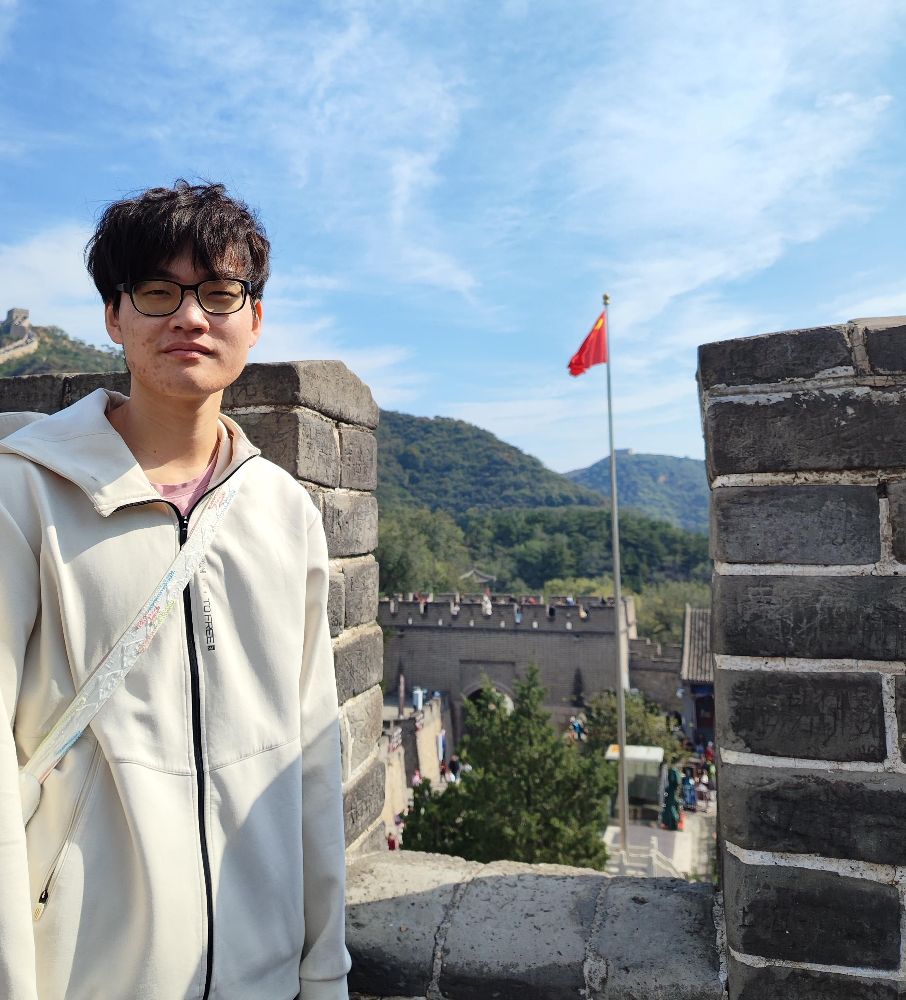

中文

Hourun Zheng
Undergraduate Student in SZU
Major in Robotic Engineering
Contact Information
📧
zhenghourun@gmail.com
🔗
GitHub Profile
Research Interests
• Machine Learning
• Robot Control
• Image Processing
• Fault Diagnosis
• Embedded Systems